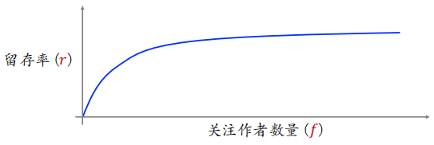

WSS推荐系统学习笔记12：涨指标的方法2
1 提升多样性
可以通过提升多样性来提高指标，包括排序多样、召回多样性和探索流量。
1.1 排序多样性
1.1.1 精排多样性
精排阶段，结合兴趣分数和多样性分数对物品 排序。
- ：兴趣分数，即融合点击率等多个预估目标
- ：多样性分数，即物品 与已经选中的物品的差异
根据加和 对物品做排序。
常用 MMR、DPP 等方法计算多样性分数，精排使用滑动窗口，粗排不使用滑动窗口。因为精排决定最终的曝光，曝光页面上邻近的物品相似度应该小，所以计算精排多样性要使用滑动窗口。粗排要考虑整体的多样性，而非一个滑动窗口中的多样性。
除了多样性分数，精排还使用打散策略增加多样性。
- 类目：当前选中物品 ，之后 5 个位置不允许跟 的二级类目相同
- 多模态：事先计算物品多模态内容向量表征，将全库物品聚为 1000 类；在精排阶段，如果当前选中物品 ，之后 10 个位置不允许跟 同属一个聚类，因为一个聚类中的图片和文字相似，应该被打散
1.1.2 粗排多样性
粗排给 5000 个物品打分，选出 500 个物品送入精排。提升粗排和精排多样性都可以提升推荐系统核心指标。
根据 对 5000 个物品排序，分数最高的 200 个物品送入精排，这里暂时不考虑多样性分数，优先考虑兴趣分数，保证用户感兴趣的物品能够优先进入精排。对于剩余的 4800 个物品，对每个物品 计算兴趣分数 和多样性分数 。根据 对剩余 4800 个物品排序，分数最高的 300 个物品送入精排，这 300 个物品既是用户感兴趣的，也和之前挑选出的 200 个物品有较大差异。
1.2 召回多样性
1.2.1 双塔模型：添加噪声
用户塔将用户特征作为输入，输出用户的向量表征；然后在向量数据库中做 ANN 检索，召回向量相似度高的物品。
线上做召回时（在计算出用户向量之后，在做 ANN 检索之前），往用户向量中添加随机噪声。添加的噪声强弱取决于用户的兴趣，用户的兴趣越窄（比如用户最近交互的 个物品只覆盖少数几个类目），则添加的噪声越强。
添加噪声使得召回的物品更多样，添加多样性，可以提升推荐系统核心指标。
1.2.2 双塔模型：抽样用户行为序列
用户最近交互的 个物品（用户行为序列）是用户塔的输入，保留最近的 个物品（），对用户随机序列做随机抽样，可以提高召回的多样性，因此提升推荐系统的核心指标。
从剩余的 个物品中随机抽样 个物品（），可以是均匀抽样，也可以用非均匀抽样让类目平衡。将得到的 个物品作为用户行为序列，而不是用全部 个物品。
每次做召回的时候，都会对用户行为序列做随机抽样，这样会让双塔模型召回的结果有随机性，多样性会提升。抽样用户行为序列为什么能涨指标？
- 注入随机性，召回结果更多样化
- 可以非常大，可以利用到用户很久之前的兴趣
1.2.3 U2I2I：抽样用户行为序列
U2I2I（user ⟶ item ⟶ item）中的第一个 item 是指用户最近交互的 个物品之一，在 U2I2I 中叫作种子物品。 个物品覆盖的类目数较少，且类目不平衡。
假设系统共有 200 个类目，某用户的 个物品只覆盖 15 个类目，这说明用户的兴趣不是很宽泛。另一方面，这 个物品的类目非常不平衡，足球类目的物品有 个，电视剧类目的物品有 个，其余类目的物品数均少于 个。如果直接用这 个物品作为种子，那么召回的物品大部分都集中于足球和电视剧，多样性很差。
为了提升多样性，可以做非均匀随机抽样，从 个物品中选出 个，让类目平衡（想法和效果与双塔中的用户行为序列抽样相似）。用抽样得到的 个物品（代替原本的 个物品）作为 U2I2I 的种子物品。
一方面，类目更平衡，多样性更好。另一方面，现在可以把 设置的可以更大，覆盖的类目更多。
1.3 探索流量
给每个用户曝光的物品中有 2%是非个性化的，用作兴趣探索。维护⼀个精选内容池，其中物品均为交互率指标高的优质物品（内容池可以分人群，比如30~40岁男性内容池）。既然没有了个性化，那么就要提升物品质量来吸引用户，用高质量来弥补缺少个性化造成的损失。
从精选内容池中随机抽样几个物品，跳过排序，把物品直接插入最终排序结果。兴趣探索在短期内一定会对核心指标产生负向影响，但长期会产生正向影响，会发掘用户更多的兴趣点，吸引用户留存。
2 特殊用户人群
推荐系统为什么要特殊对待特殊人群，有几方面原因：
- 新⽤户、低活⽤户的⾏为很少，个性化推荐不准确。
- 新⽤户、低活⽤户容易流失，要想办法促使他们留存。
- 特殊⽤户的⾏为（⽐如点击率、交互率）不同于主流⽤户，基于全体⽤户⾏为训练出的模型在特殊⽤户⼈群上有偏差，效果不好，所以要使用对特殊人群使用特殊模型消除偏差。
具体有以下三种涨指标的方法：
- 构造特殊内容池，⽤于特殊⽤户⼈群的召回。
- 使⽤特殊排序策略，保护特殊⽤户。
- 使⽤特殊的排序模型，消除模型预估的偏差。
2.1 构造特殊的内容池
推荐系统为什么需要给特殊用户构造特殊的内容池？
- 新⽤户、低活⽤户的⾏为很少，个性化召回不准确。（既然个性化不好，那么就保证内容质量好。)
- 针对特定⼈群的特点构造特殊内容池，提升⽤户满意度。（例如，对于喜欢留评论的中年⼥性，构造促评论内容池，满⾜这些⽤户的互动需求。）
如何构造特殊内容池？
-
方法 1：根据物品获得的交互次数、交互率选择优质物品
首先要圈定⼈群：只考虑特定⼈群，例如18~25岁⼀⼆线城市男性。然后⽤该⼈群对物品的交互次数、交互率给物品打分，选出分数最⾼的物品进⼊内容池。内容池有弱个性化的效果。
内容池定期更新，加⼊新物品，排除交互率低和失去时效性的⽼物品。这样构造出的内容池只对该⼈群⽣效。
-
方法 2：做因果推断，判断物品对⼈群留存率的贡献，根据贡献值选物品。这方面的技术不算很成熟。
2.2 特殊内容池的召回
通常使⽤双塔模型从特殊内容池中做召回。双塔模型是个性化的。对于新⽤户，双塔模型的个性化做不准，可以靠⾼质量内容、弱个性化做弥补。
推荐系统有很多内容池，每多增加一个内容池，会增加多少额外的训练代价？
- 对于正常用户，不论有多少内容池，只训练一个双塔模型
- 对于新用户，由于历史交互记录很少，需要单独训练模型
每多增加一个内容池，都需要多增加一份额外的推理代价：
- 内容池定期更新，然后要更新 ANN 索引。
- 线上做召回时，需要做 ANN 检索。
- 增加的计算量和内容池大小相关，特殊内容池都很小（比全量内容池小10~100倍），所以需要的额外算⼒不⼤。
2.3 特殊的排序策略
2.3.1 排除低质量物品
对于新⽤户、低活⽤户这样的特殊⼈群，业务上只关注留存，不在乎消费（总曝光量、广告收⼊、电商收入）。
对于新⽤户、低活⽤户，少出广告、甚⾄不出广告。新发布的物品不在新⽤户、低活⽤户上做探索。物品新发布时，推荐做得不准，会损害⽤户体验。既然要做探索，只在活跃的⽼⽤户上做探索，对新物品提权（boost）。不在新⽤户、低活⽤户上做探索，避免伤害⽤户体验。
2.3.2 差异化的融分公式
新用户、低活用户的点击、交互⾏为不同于正常⽤户。低活⽤户的⼈均点击量很⼩；没有点击就不会有进⼀步的交互，不会发生点赞、收藏、评论和转发。低活⽤户的融分公式中，提⾼预估点击率的权重（相较于普通⽤户）。
还可以保留几个曝光坑位给预估点击率最⾼的几个物品。例如，精排从 500 个物品中选 50 个作为推荐结果，其中 3 个坑位给预估点击率最⾼的物品，剩余 47 个坑位由融分公式决定，这 3 个坑位的作用是吸引用户点击，甚⾄可以把点击率最⾼的物品排在第⼀，确保⽤户⼀定能看到。
2.4 特殊的排序模型
2.4.1 差异化的排序模型
特殊⽤户⼈群的⾏为不同于普通⽤户，新⽤户、低活⽤户的点击率、交互率偏⾼或偏低。
排序模型被主流⽤户主导，对特殊⽤户做不准预估。⽤全体⽤户数据训练出的模型，给新⽤户做的预估有严重偏差。如果⼀个 APP 的⽤ 90%是⼥性，⽤全体⽤户数据训练出的模型，对男性⽤户做的预估有偏差。
存在的问题：对于特殊⽤户，如何让排序模型预估做得准？
方法一：结合大模型和小模型
⽤全体⽤户⾏为训练⼤模型，⼤模型的预估 拟合⽤户⾏为 ，其中 表示用户没有点击， 表示用户有点击。⽤特殊⽤户的⾏为训练⼩模型，用小模型的预估 拟合⼤模型的残差 （表示大模型犯的错误）。对主流⽤户只⽤⼤模型做预估 ，对特殊用户，结合大模型和小模型的预估 ，作为最终的预估。
小模型在这里起到纠偏的作用。
方法二：融合多个 experts，类似 MMoE
只⽤⼀个模型，模型有多个 experts，各输出⼀个向量。对 experts 的输出做加权平均得到一个向量，和 MMoE 的区别是根据⽤户特征计算权重，而不是通过神经网络计算权重。以新⽤户为例，模型将⽤户的新⽼、活跃度等特征作为输入，输出权重，用于对 experts 做加权平均。
方法三：大模型预估之后，用小模型做校准
首先⽤⼤模型预估点击率、交互率，大模型可以对大部分用户做准确的预估。将⽤户特征、⼤模型预估点击率和交互率作为⼩模型（例如 GBDT）的输⼊。在特殊⽤户⼈群的数据上训练小模型，小模型的输出拟合⽤户真实行为。
2.4.2 错误的做法
每个⽤户⼈群使⽤⼀个排序模型，推荐系统同时维护多个大模型。系统有⼀个主模型；每个⽤户⼈群有⾃⼰的⼀个模型。每天凌晨，⽤全体⽤户数据更新主模型。基于训练好的主模型，在某特殊⽤户⼈群的数据上再训练1 epoch，作为该⽤户⼈群的模型。
短期可以提升指标；维护代价⼤，长期有害。
起初，低活男性⽤户模型⽐主模型的 AUC ⾼ 0.2%。主模型迭代几个版本后，AUC 累计提升 0.5%。特殊人群模型太多，长期没有人维护和更新。如果把低活男性⽤户模型下线，换成主模型，在低活男性⽤户上的 AUC 反倒提升 0.3%！
看似指标提升了两次，但是实际上推荐系统没有任何改变，折腾之后又回到了原来的样子，只不过浪费了人的时间和机器的算力而已。
3 利用交互行为
用户交互⾏为：点赞、收藏、转发、关注、评论……推荐系统如何利⽤交互⾏为？
最简单的方法：将模型预估的交互率用于排序：模型将交互行为当作预估的目标，将预估的点击率、交互率做融合，作为排序的依据。
交互行为有没有其他用途？
3.1 关注量对留存的价值
对于一位用户，他关注的作者越多，则平台对他的吸引力越强。用户留存率（）与他关注的作者数量（）正相关，但不是线性的关系。
如果某用户的 较小，则推荐系统要促使该用户关注更多作者。

如何利⽤关注关系提升⽤户留存？
-
方法一：用排序策略提升关注量
对于用户 ，模型预估候选物品 的关注率为 。设用户 已经关注了 个用户，我们定义单调递减函数 ，用户已经关注的作者越多，则 越小。
在排序融分公式中添加 ，用于促关注，如果 小且 大，则 给物品 带来很大加分。只有在 小的时候才会起到作用。
-
方法二：构造促关注内容池和召回通道
这个内容池中物品的关注率越高，可以促关注。如果用户关注的作者数 较小，则对该用户使用促关注内容池。召回配额可以固定，也可以与 负相关，用户关注作者数越小，就从这个内容池召回越多的物品。
3.2 粉丝数对促发布的价值
UGC 平台将作者发布量、发布率作为核⼼指标，希望作者多发布。作者发布的物品被平台推送给⽤户，会产⽣点赞、评论、关注等交互。交互（尤其是关注、评论）可以提升作者发布积极性。作者的粉丝数越少，则每增加⼀个粉丝对发布积极性的提升越大。
用排序策略帮助低粉新作者涨粉，某作者 的粉丝数（被关注数）为 ，作者 发布的物品 可能被推荐给⽤户 ，模型预估关注率 。
定义单调递减函数 作为权重，作者 的粉丝越多，则 越小。在排序融分公式中添加 ，帮助低粉作者涨粉。
3.2.1 隐式关注关系
召回通道 U2A2I：user → author → item
- 显示关注关系：用户 关注了作者 ，将 发布的物品推荐给 ，此时点击率、交互率指标通常⾼于其他召回通道
- 隐式关注关系：用户 喜欢看作者 发布的物品，但是 没有关注
隐式关注的作者数量远⼤于显式关注。挖掘隐式关注关系，构造 U2A2I 召回通道，可以提升推荐系统核⼼指标。
3.3 转发（分享）
3.3.1 促转发（分享回流）
A 平台⽤户将物品转发到 B 平台，可以为 A 吸引站外流量，推荐系统做促转发（也叫分享回流），可以提升 DAU 和消费指标。
简单提高转发次数是否有效呢？
- 在排序阶段，模型预估转发率为 ，融分公式中有一项 ，让转发率大的物品更容易获得曝光机会。
- 增大权重 可以促转发，转发变多，吸引站外流量，但是会负面影响点击率和其他交互率。
3.3.2 KOL建模
⽬标：在不损害点击和其他交互的前提下，尽量多吸引站外流量。
什么样的用户的转发可以吸引大量站外流量？其他平台的Key Opinion Leader（KOL）。
如何判断本平台的用户是不是其他平台的 KOL？可以通过该用户历史上的转发能带来多少站外流量进行判断。
- 方法一：排序融分公式中添加额外的意向
- ：如果用户 是站外 KOL，则 大
- ：为用户 推荐物品 ，模型预估的转发率
如果 是站外 KOL，则给他曝光他可能转发的物品。
- 方法二：构造促转发的内容池和召回通道，对站外 KOL 生效
3.4 评论
3.4.1 评论促发布
UGC 平台将作者发布量、发布率作为核⼼指标，希望作者多发布，从而丰富物品内容池。关注、评论等交互可以提升作者发布积极性，这两个指标最重要。
对于新发布的物品，如果尚未获得很多评论，则给预估评论率提权，让物品尽快获得评论。排序融分公式中添加额外⼀项 ：
- ：权重，与物品 已有的评论数量负相关，获得的评论越小，越应该促评论
- ：为用户推荐物品 ，模型预估的评论率
3.4.2 评论的其他价值
有的⽤户喜欢留评论，喜欢跟作者、评论区⽤户互动。给这样的⽤户添加促评论的内容池，让他们更多机会参与讨论，有利于提升这些⽤户的留存。
有的⽤户常留⾼质量评论（评论的点赞量⾼），⾼质量评论对作者、其他⽤户的留存有贡献（作者、其他用户觉得这样的评论有趣或有帮助）。推荐系统用排序和召回策略鼓励这些用户多留评论。
 微信
微信 支付宝
支付宝